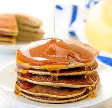

Flourless Banana Pancakes
Description
This flourless banana pancake recipe with egg sounds weird, but it's
amazing and healthy for you! A gluten-free alternative to pancakes. Enjoy
with your favorite fruit topping, or serve plain with honey.

Ingredients
- 1 very ripe banana, mashed
- 2 large eggs, beaten
- 2 tablespoons ground flax seed (Optional)
- ¼ teaspoon pure vanilla extract (Optional)
- 2 tablespoons coconut oil
Steps
-
Mix together mashed banana and beaten eggs in a large bowl until smooth.
Add ground flax seed and vanilla; mix until batter is well combined.
-
Heat coconut oil in a large skillet over medium-low heat. Scoop batter,
about 1/4 cup per pancake, onto the skillet and cook until the centers
start to bubble, about 30 seconds. Flip pancakes and continue cooking
until the bottoms are lightly browned, 1 to 2 minutes more. Repeat with
remaining batter.